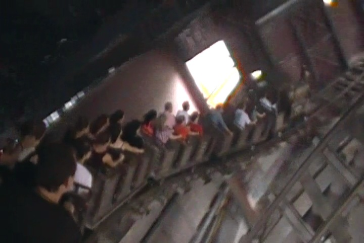
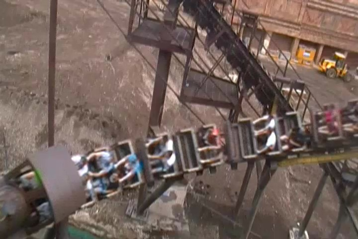

| |
.
Colorado Adventure Review

We're here at Phantasialand. Today, we'll be reviewing the park's mine train, Colorado Adventure. Or as others like to call it, The Michael Jackson Thrill Ride. I'm not exactly sure why it's called the Michael Jackson Thrill Ride. I can't prove it, but I remember hearing that Michael Jackson rode it (I know he opened the ride and was there on opening day), but anyways. The rumor I once heard that I can't prove is that Michael Jackson exclaimed that this was his favorite coaster ever, and Phantasialand, in honor of Michael Jackson, you know, before he died and people began giving a damn about him. Really? I know that Colorado Adventure is a really good mine train, but is this really the best coaster ever? I mean, in 1996, we had coasters such as Coaster and Phoenix still running as incredible old woodies. We had rip roaring steel coaster beasts such as Kumba. You're a rich celebrity with access to all these rides, and your favorite coaster is a mine train in Germany? I know it's one of the best mine trains ever, but still. Really? But hey. First of all, I have no right to judge Michael Jackson's taste in coasters. I know there's some really weird sh*t that I like and almost nobody else does. Oh, and though my coaster preferences are far from crazy outliers, I definetly have some disagreements with most enthusiasts. And second of all, we don't even know if that is true. I just rememeber hearing this and can't pinpoint where. So this is just pure speculation at this point. But anyways, Best Mine Train ever? Michael Jackson's favorite coaster ever? What are we waiting for? Let's hop in the cars and go for a ride. We roll out of the station, around a turn and climb a small lifthill. We head down a small dip and rise up into this little shed. Hey, I like the theming so far. We then head down a small, but steep drop that sort of comes out of nowhere and head into a turn that leads us into a dark dank hole. Hey, TAKE THE TUNNEL!!! We then rise out of the tunnel, but we don't head straight outside. We're now sort of in this building, but it's not completely closed. So we can see light breaking in and where we're going, but we're still inside a building. We head around a turn and down a small little drop and pop out into the light. We keep on turning and we TAKE THE TUNNEL AGAIN!!! Well, actually the tunnel is that building that we just got kicked out off. We head up a small hill and dip down into a helix. Damn, you can really see just why this is such a good mine train. We then slide out of the building, as we are told to "Beat It!" and take the next lift hill out of here. We slide mostly up the lifthill before catching the lifthill and climbing up to the very top. There's not much of a view, though we have a nice rock wall to the side, and a nice view of that African Village with Black Mamba's first drop poking out in the distance. Maybe if we're lucky, we'll get to see a train. We then crest the lifthill, dip down into a mess of track. All right. We're not going very fast. We TAKE ANOTHER TUNNEL!!! And suddenly, we're dropping. OH SH*T!!! We're now going fast and doing all sorts of turns in the dark. I have no idea what the hell is going on right now. All I know is that for those expecting a calm ride, then this is is BAD!!! IT'S BAD!!! REALLY REALLY BAD!!! But for most people, this is freaking awesome. =) Hell, it's personally my favorite part of the ride. Because I just have no idea what the hell is going on. Eventually, we break out of the darkness and plunge back into "The Building" with the mess of track. That's right. We're going back in. Cause we're just rebels like that. But once again, they tell us to "Beat It!" and force us to take the next lifthill. Again! We crest the lifthill again, dip down, go around a turn, and then dip down to the ground. We then go around a couple turns and helixes, they're fun, but I want more of that insanity in the dark please. Eventually, we head straight into a fort of the Najavo people. TAKE THE FORT!!! Maybe in there, we'll be able to crack their code. We dip down inside and pop back out. Nope. We then dip down to the ground and head straight into a banked turn, low to the ground, or more specifically, the water. We head out of the banked turn and fly past some kids on the kiddy drop tower. Oh Sh*t!! The fears of that night you had bareback sex creep in. Why!? Oh why didn't you just use a condom! What if that kid is...No!!! Impossible!! To prove that point, we immidietly shout out "THE KID IS NOT MY SON!!!", so that everyone now knows. Phew, well we covered our asses today. =) We then rise up and head into the brake run. Yep. The ride is over. Now what? Get off, and do the Thriller!!! Come on!! Get off your lazy asses and do it!! So that's Colorado Adventure. Yeah, it's far from the best coaster ever, but honestly, as far as Mine Trains go, this is right up there with ones like Big Thunder Mountain and Thunderation. It's actually a really fun ride. I legetimatly like it. I'd definetly recommend riding it when you visit Phantasialand. I'll be there. The only question remaining is "Will You Be There?".
7/10
Location: Phantasialand
Opened: 1996
Built by: Vekoma
Last Ridden: June 29, 2012
Colorado Adventure Photos


Home
|